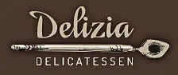
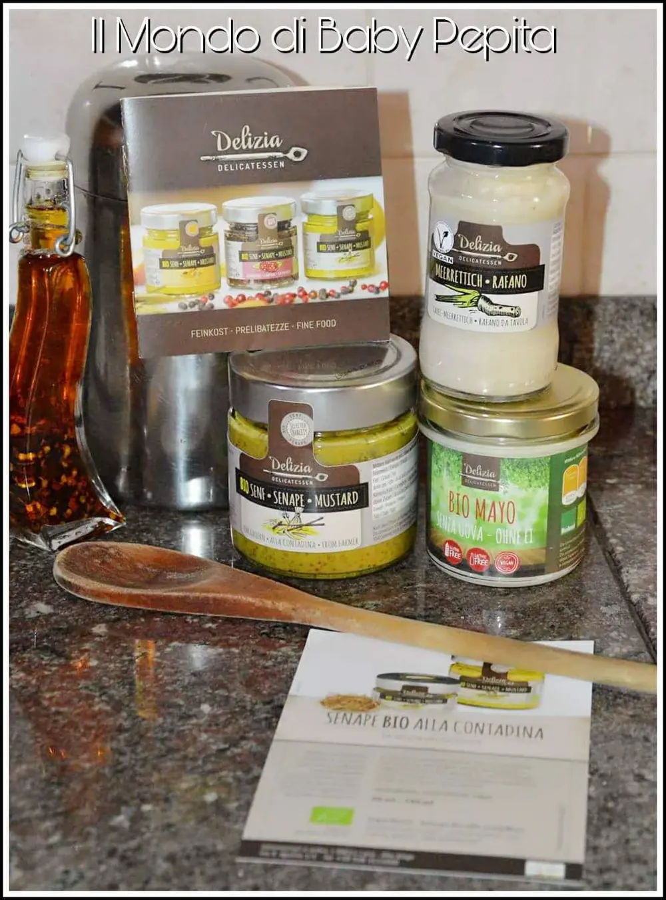
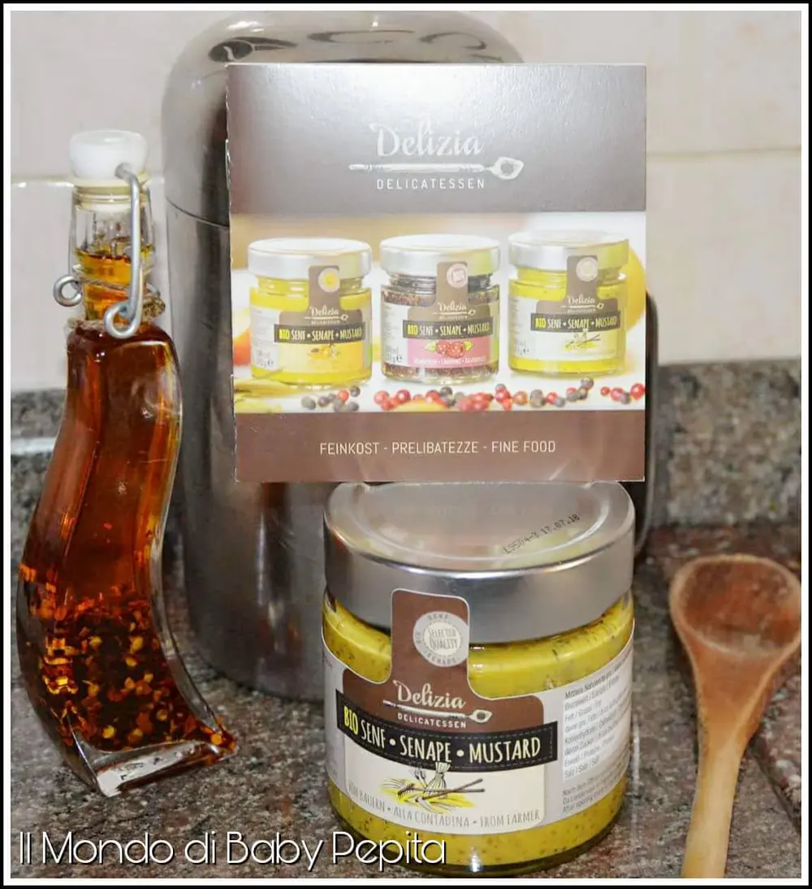
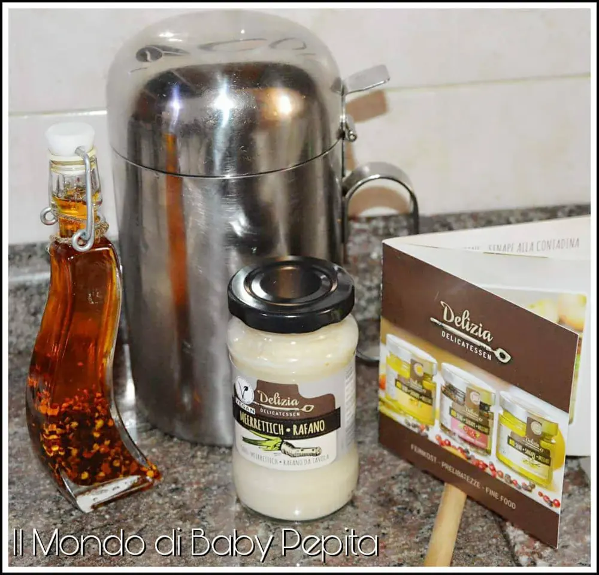
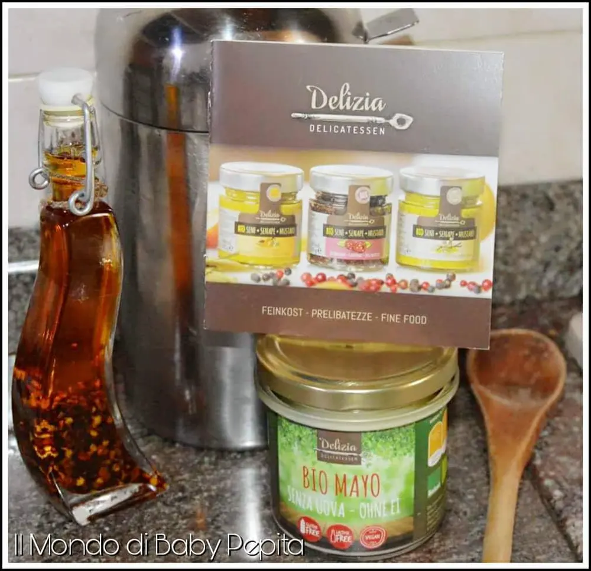
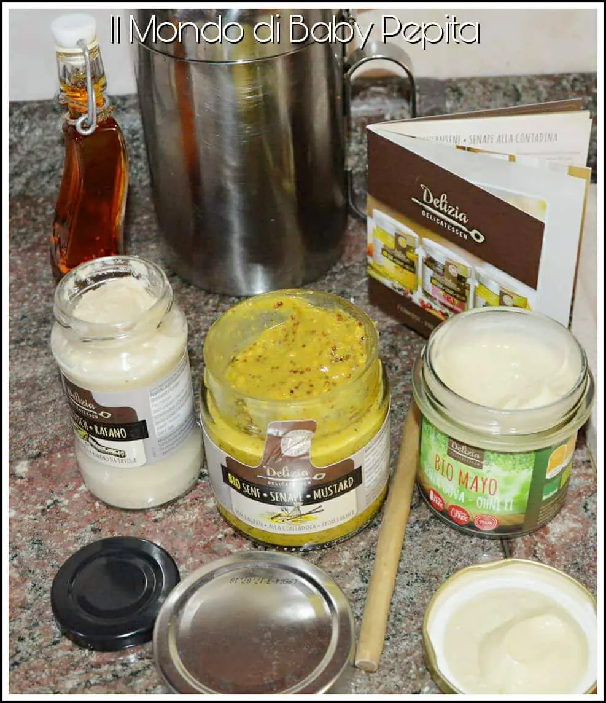

Salse: Delizia Delicatessen

Salse: Conoscere nuove ricette ci porta quasi sempre ad essere diffidenti perché in fondo, diciamolo, noi italiani siamo abitudinari.
Ma oggi voglio mostrarvi le nuove ricette di Silvia Wirths, una meranense che ama usare la fantasia in cucina e apprezza i sapori insoliti, tanto da creare delle prelibatezze culinarie dal gusto del tutto singolare.
Nasce così Delizia Delicatessen, è un'azienda incentrata sulla tutela dell'ambiente tanto da realizzare un secondo ramo della società denominato Delizia ECO.
Già dal nome Eco possiamo intuire che la produzione dei prodotti sono del tutto biologici, a basso impatto ambientale ed eco-sostenibile.
Per darvi un'idea dell'azienda Delizia Eco, vi dico che gli articoli si aggirano tra spazzolini organici in bambù, carta igienica liscia, cannucce in bambù, ecc ecc . Quindi potrete capire che è tutto molto al naturale ma anche molto sfizioso.
Vi mostro però adesso, gli articoli culinari che l'azienda mi ha fatto provare.
• bauernsenf senape biologica • delizia meerrettich rafano • bio mayo

BAUERNSENF SENAPE BIOLOGICA.
Si presenta come questa salsa giallo senape appunto, con all'interno pezzi di spezie.

Adatta per marinare, grigliare, da spalmare. Gusto forte ma con un retrogusto delicato.
Ingredienti:Acqua, semi di senape, brandy, sale marino, spezie.Senza glutine, senza lattosio, vegano.
È disponibile in due versioni: da 50 ml oppure da 180 ml.
Poichè è senza glutine è una salsa che può essere tranquillamente ingerita anche da celiaci.
Prezzo: 4,99 €
MEERRETTICH RAFANO.
È una salsa che si presenta bianca soffice.

Nella tradizione gastronomica tedesca la salsa al rafano è servita con le salsicce e i bottoni e accompagna spesso i piatti a base di uova.
Ha un gusto abbastanza forte, per gli amanti di gusti robusti e intensi.
Ingredienti:Olio di segale, zucchero, sale, addensante: gomma guar, gomma di carrube, acido citrico, antiossidante: metabisolfito di sodio, aroma naturale di limone. Senza glutine, senza lattosio, vegano.
Prezzo: 2,29 €
BIO MAYO SENZA UOVA.
Una maionese che non è solo vegana ma anche 100% privo di additivi. Perfetto per patatine fritte, verdure grigliate, hamburger vegetali, panini con insalata o con qualsiasi cosa preferite. Ma anche pesce alla griglia o carne alla brace.

Ingredienti:Olio di semi di colza, succo di mela spremuto a freddo, mandorle, aceto di vino bianco, senape, acqua, aceto di sidro, sale marino. Senza lattosio, vegano.
Prezzo: 3,19 €

Insomma, ormai si può mangiare di tutto senza problemi di glutine o di allergie varie.
Ma soprattutto si può mangiare tutto anche stando a dieta.